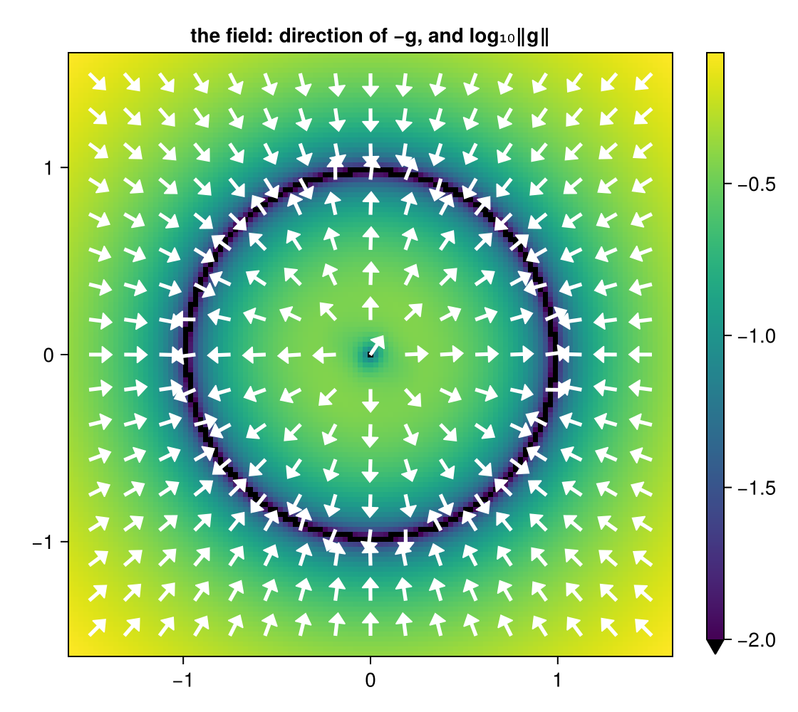
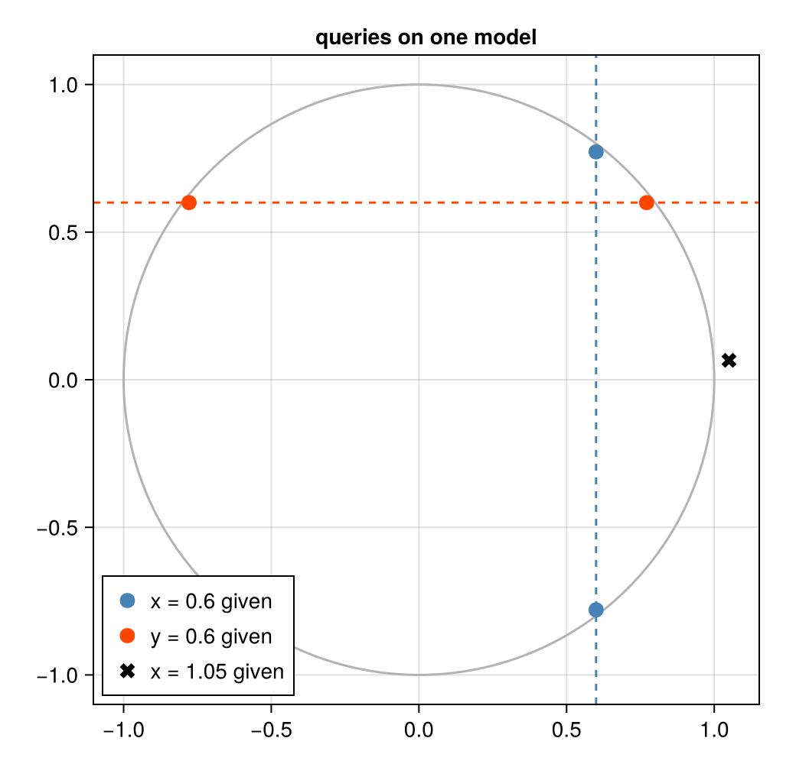

A relation without training: the circle
Download as a Jupyter notebook
A neural network learns a function $f : X \to Y$ and runs one way. This tutorial shows the alternative Lenticulum is built on: a model of a relation $R \subseteq Z$ on a joint space, queried in whichever direction you like. To keep the first example free of training, the model is a diffusion model whose noise predictor is known in closed form: the exact denoiser of points on the unit circle.
You will see:
- a query "given $x$, find $y$" with two answers, the starting point picking one;
- the same model asked the other way round, "given $y$, find $x$";
- what happens off the circle, where no exact answer exists;
- the vector field that does the work.
using VariationalDiffusion, LuxCore, Random, LinearAlgebra
using CairoMakieThe model
Training data would be points on the unit circle. Here we place 48 narrow Gaussians around it; GaussianMixtureEps is the optimal noise predictor $\varepsilon^\ast(z, t)$ for that data, the network a perfect training run would produce.
sched = VPSDE()
θ = range(0, 2π; length = 49)[1:48]
centres = vcat(cos.(θ)', sin.(θ)') # 2 × 48
circle = NoisePredictor(GaussianMixtureEps(sched, centres; s = 0.05), sched)
ps, st = LuxCore.setup(Xoshiro(0), circle)The joint space is $Z = \mathbb R^2$ with coordinates $z = (x, y)$. Nothing in the model says which coordinate is the input.
From a density to a relation
A diffusion model defines, through its noise predictor, a vector field $g(z)$ on $Z$: the averaged denoising residual over a fixed set of noise levels and noise draws (the "field nodes"). It is the gradient of a smoothed negative log-density, so it points away from the data. The relation is the set of its stable roots: in the plot, the dark ring where the field vanishes, with the arrows pointing onto it from both sides.
The field also vanishes at the centre, by symmetry, but there the arrows point away: it is a minimum of the density, a root that is unstable. Inference only accepts stable roots, where the symmetric part of the Jacobian of $g$ is positive definite.
m = ImplicitDiffusion(circle, field_nodes(Xoshiro(1), 2; samples = 8))
field(x, y) = first(prior_field(m, [x, y], ps, st))
fine = range(-1.6, 1.6; length = 121)
logmag = [log10(norm(field(x, y))) for x in fine, y in fine]
coarse = range(-1.5, 1.5; length = 17)
pts = vec([Point2f(x, y) for x in coarse, y in coarse])
dirs = map(pts) do p
g = field(p[1], p[2])
Vec2f(-g / norm(g)) # -g points towards the data
end
fig = Figure(size = (560, 500))
ax = Axis(fig[1, 1]; aspect = DataAspect(), title = "the field: direction of −g, and log₁₀‖g‖")
hm = heatmap!(ax, fine, fine, logmag; colormap = :viridis, colorrange = (-2, maximum(logmag)), lowclip = :black)
arrows2d!(ax, pts, 0.12 .* dirs; color = :white)
Colorbar(fig[1, 2], hm)
fig
A query is a choice of inputs
A query clamps some coordinates and solves for the rest. The precision vector $\rho$ says which: $\rho_i = \infty$ clamps coordinate $i$ to the value in $z_0$, $\rho_i = 0$ leaves it free. Inference finds a root of the field with the clamped coordinates held fixed.
Given $x = 0.6$, find $y$. The circle has two answers, $y = \pm 0.8$, and the starting value of $y$ decides which one is returned.
up, _ = implicit_infer(m, [0.6, 0.5], [Inf, 0.0], ps, st) # x clamped, y free, start y = 0.5
dn, _ = implicit_infer(m, [0.6, -0.5], [Inf, 0.0], ps, st) # same query, start y = -0.5
(up.z, dn.z)([0.6, 0.7717918986472182], [0.6, -0.7795429654765649])Both solves report convergence and stability (a minimum of the smoothed energy, not a saddle):
(up.converged, up.stable, dn.converged, dn.stable)(true, true, true, true)The answers sit about 3% inside the circle. That is not a numerical error but the smoothing: the field nodes use noise levels up to $t = 0.05$, and smoothing a ring of density pulls its ridge slightly inwards. Smaller noise levels shrink the bias and make the field steeper.
The same model, the other direction
Swap the precision vector and $y$ becomes the input. No retraining, no second model.
left, _ = implicit_infer(m, [-0.5, 0.6], [0.0, Inf], ps, st)
right, _ = implicit_infer(m, [0.5, 0.6], [0.0, Inf], ps, st)
(left.z, right.z)([-0.7784463141479555, 0.6], [0.7710695308631436, 0.6])Off the relation
$x = 1.05$ lies just outside the circle, so no $y$ satisfies $x^2 + y^2 = 1$. A function would extrapolate silently; the relation returns the point of highest smoothed density on the line $x = 1.05$, close to $y = 0$, and its residual is still zero because the clamped problem has a root.
off, _ = implicit_infer(m, [1.05, 0.3], [Inf, 0.0], ps, st)
(off.z, off.converged)([1.05, 0.06570805634146647], true)Soft evidence
Precisions between $0$ and $\infty$ are soft evidence: a coordinate is pulled towards a value with a given strength instead of being fixed. Here $x$ is clamped and $y$ is anchored at $0.3$ with increasing precision. Without an anchor $y$ lands on the circle; as the precision grows, the anchor's pull $\rho_y^2 (y - 0.3)$ outweighs the field and $y$ moves to $0.3$, off the relation. Precision is how much you trust a piece of evidence relative to the model.
for ρy in (0.0, 1.0, 5.0, 50.0)
sol, _ = implicit_infer(m, [0.6, 0.3], [Inf, ρy], ps, st)
println("ρ_y = ", rpad(ρy, 5), " y = ", round(sol.z[2]; digits = 3))
endρ_y = 0.0 y = 0.772
ρ_y = 1.0 y = 0.393
ρ_y = 5.0 y = 0.304
ρ_y = 50.0 y = 0.3Picture of the three queries
fig = Figure(size = (520, 500))
ax = Axis(fig[1, 1]; aspect = DataAspect(), title = "queries on one model")
lines!(ax, cos.(range(0, 2π; length = 200)), sin.(range(0, 2π; length = 200)); color = :gray70)
vlines!(ax, [0.6]; color = :steelblue, linestyle = :dash)
hlines!(ax, [0.6]; color = :orangered, linestyle = :dash)
scatter!(ax, [up.z[1], dn.z[1]], [up.z[2], dn.z[2]]; color = :steelblue, markersize = 14, label = "x = 0.6 given")
scatter!(ax, [left.z[1], right.z[1]], [left.z[2], right.z[2]]; color = :orangered, markersize = 14, label = "y = 0.6 given")
scatter!(ax, [off.z[1]], [off.z[2]]; color = :black, marker = :xcross, markersize = 14, label = "x = 1.05 given")
axislegend(ax; position = :lb)
fig
What to read next
- Train a small diffusion model replaces the closed form by a learned network and differentiates through inference.
- The theory: Implicit Diffusion Learners in the vault.
This page was generated using Literate.jl.